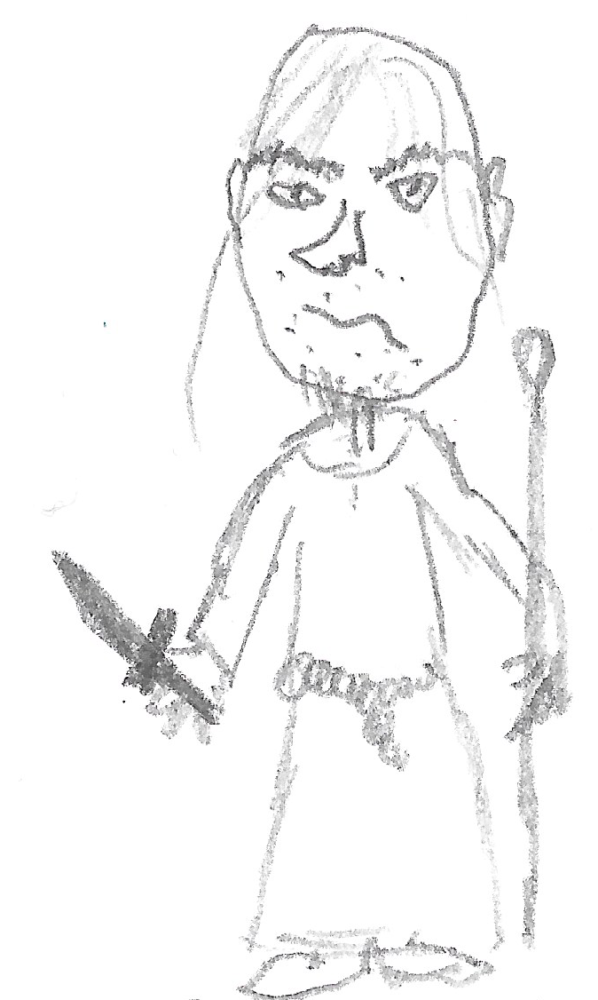
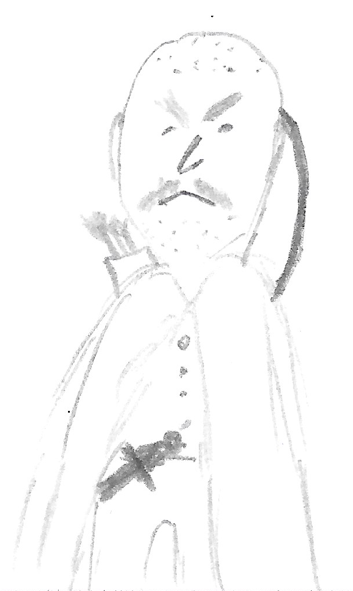
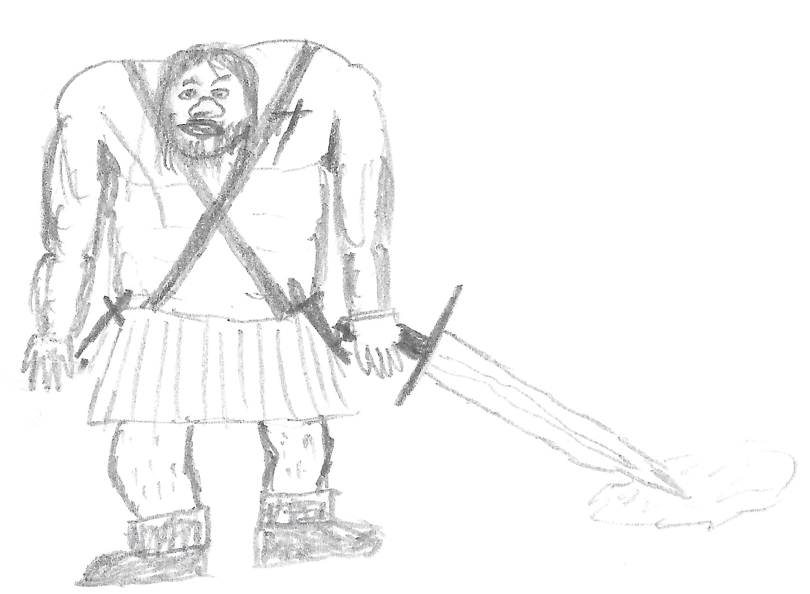

Adventure Overview
Notes for using OSE
-
Use the regular Advanced OSE system.
-
Allow black powder weapons from Carcass Crawler.
Setting Notes
-
Pseudo-European, set in the 16th century.
-
Human-centric but all advanced OSE races exist throughout Europe, with varying frequency, e.g., Elvish populations are slightly larger in Ireland, France, and Wallachia, dwarves in Switzerland, the Habsburg Empire, and Scandinavia. Gnomes in Scandinavia and the Ottoman Empire. Halflings are more common in Swabia, Bohemia, and Italy. Half-Orcs in Prussia, the Polish-Lithuanian Commonwealth, and Russia.
-
While flavors of Christianity are dominant, a diversity of religious communities has survived alongside Catholicism since Antiquity. The Protestant Reformation is weakening the power of the Catholic Church and has led to an additional flourishing of religious splinter faiths (Christian or not).
-
While the existence of god(s) is unproven, divine magic is real. There are scholarly disagreements about the source of divine magic and planar beings.
Treasure
Total treasure value in the module: about 2 OSE levels from 4 to 6 (roughly 25k in OSE), with assuming five PCs, implies a total of 120k treasure XP.
Short Summary of the Main Conflict
-
Christman Grippertenius is a dangerous brigand who has been terrorizing the region. The cloth and wine merchants of Metz have made a secret arrangement with him. They finance a steady supply of wine, ale, food, and weapons, as well as substantial coin, and protect him from official prosecution. In turn, Christman organizes his banditry to focus on other local merchants and regions further away from Metz, targeting rivaling merchant houses. As long as Christman receives his supply, he will mostly remain in his lair and drink. At times, he will leave to meet with his bandit groups to organize a raid or participate himself. If his supply, especially alcohol, runs out, he will become restless and eventually attack travelers and the town of Metz. Think of him as a ticking time bomb for the adventure. Sooner or later, unless the PCs begin to meddle, someone will drive Christman out of his lair, with dire consequences for the whole region.
-
The new Bürgermeister of Metz, Simon Hofstatter is unaware of the secret arrangement between Christman and the cloth and wine merchants. He has promised to root out banditry in the Bergkessel region, especially the famous Christman after a public uproar over the disappearance of Lise Mueller. He has issued rewards for the capture of Christman and other bandits. Surely, this will attract adventures that will upend the delicate state of affairs in the Bergkessel region.
-
Lise Mueller, the young daughter of a Metzian goldsmith, is a satanic witch. The devil appeared in her dreams and tasked her with bearing Christman’s child. She is convinced that a child conceived under Satan’s gaze and of the bandit’s loins will become a powerful harbinger of doom. She has let herself be captured by Christman and is currently “held captive” in his lair. Christman has no desire for offspring (nor sex for that matter) and has been largely ignoring her. Lise is plotting a way to seduce or incapacitate Christman to harvest his seed.
-
Peter Niers, a serial killer, necromancer, and former apprentice to Christman, is planning to usurp Christman’s unofficial position as leader of the various bandit groups in the Bergkessel. He loathes the old bandit and is determined to rule the region. He also wants the book The Rites of the Pale Wedding from Christman’s hoard to ascent to lichdom and create an undead wife for himself. He has engaged the Greencloak Pikes to help him in his endeavor and has secretly tasked them to mess with the wine and cloth merchants, hoping to drive a wedge between them and Christman.
-
The Witch Hunter Wilhelm von Hagen is roaming the region, hunting heretics, witches, and other non-believers. He is pursuing rumors about a witches coven in the region and wolf attacks around Bedburg.He will involve himself in the affairs of the Bergkessel region if he feels it gives him an opportunity to burn someone at the stake.
-
There are a few other, minor actors in the region with their own agendas.
-
Legend says Christman’s treasure cache has grown to the size of 100k gold pieces. Rumors of this hoard might just make anyone dare to find his lair…
Dramatis Personae
Christman Grippertenius
Also called Papedöne, the Bergkessel Butcher, and Schwarzer Friedrich.
63 years old, tall as a tree, a drunk, eyes reveal a deep emptiness, stinks of sweat, piss, liquor, and vomit. Pocked, gin nose, hands as big as frying pans. Old, wiry muscles, tough like old leather, cunning. Just a man.
Spends most days in a drunken stupor. Likes to strangle people to death. He is also a poison expert. Due to years of exposure (and the amount of alcohol in his system), he is immune to poisons himself.
Despite the rumors, Christman is no demon, undead or otherwise magical creature. He has made no pact with the devil. He is just a man with base urges. The worst humanity has to offer.
Christman Grippertenius—Level-10 Fighter-Thief (OSE): AC 16, HD 10 (65), Attacks: 2x weapon (sword 1d8+5, throwing knife 1d4+3), THAC0: 12[+7/+9 with longsword], Movement: 120’ (40’), ST: D6 W7 P8 B8 S10, Morale 11, Alignment CE, XP 500. Special: Sword and dagger are poisoned. If target loses 1 or more HP, save vs Poison or take an additional 1d4 damage per round for 1d4 rounds and be paralyzed for the same duration. Christman is immune to poison, Backstab, Thief Skills: CS 96, TR 80, H-N 1-4, HS 75, MS 85, OL 85, PP 85.
Christman is a master skulker. He is never surprised but surprises enemies on a 1-4.
Equipment: Old longsword+2 (crusted with dried blood, utterly mundane but poisoned), poisoned throwing daggers, a bottle of ale, leather armor +2, Boots of Elvenkind.
Combat strategy: Christman does not fight fair. He will hit-and-run, lure enemies into traps and ambushes, target spellcasters (and make sure the target is dead and not just unconscious), and use his daggers to sideline dangerous warriors. He knows his caves from muscle memory. Fighting Christman, despite him being by himself and a mundane warrior, should be an absolute nightmare. If anyone invades his lair and survives, Christman will pursue them. If his lair is invaded or his alcohol supply dries up, he will rally the local bandit groups to: a) go after any PCs and kill them in their sleep; b) execute a night raid on Metz, attempting to kill the mayor. If that comes to pass, the wine and cloth merchants of Metz will ensure one of their own becomes mayor and stops the hunt for Christman to continue their bargain.
Forces beyond this world are watching. Christman has murdered 964 people thus far. If he makes it to 999, God will abandon humankind, and the Gates of Hell will open. He or anyone else is unaware of this issue. This is strictly between God and the world.
Peter Stumpp
Peter Stumpp is a wealthy farmer and landowner in Bedburg. He lost his wife years ago and has been raising his four daughters by himself. He is an ambitious man, but loves his daughters. He is currently scheming to marry both of his older daughters off to wealthy suitors, forging business alliances in the process. He controls land suitable for wine growing and wants his family to join with a wine merchant in Metz.
Stumpp’s wife died off a sudden fever that also afflicted his daughters. After his wife passed, he sought the help of a local witch (a hag in disguise). She saved the daughters but told Stumpp there will be a price to pay. When the hag came to collect his oldest daughter as payment, Stumpp refused. The hag cursed him to become a werewolf.
Afflicted by the werewolf curse, he has killed many innocents in nightly murder sprees. Trying to protect his family, he has begun to lock himself into his barn. The murders have made the Metzian wine merchant skeptical about investing into Stumpp’s land and put the marriage plans for his daughter into jeopardy.
Peter Stumpp is a bear of a man with big belly, red hair and moustache, fiercely protective of his daughters. Statistics of a Leader Werewolf.
Peter Stumpp Medium, beastly visage.
AC 5[14] (9[10] in human form) HD 4*(18hp) Attacks 1 x bite (2d4) THAC0 16[+3] Movement 180’(60’) ST D10 W11 P12 B13 S14 (4) Morale 8 Alignment Chaotic XP 125 (leader: 300) Number Appearing 1d6 (2d6) Treasure Type C
- Leader: Groups of 5+ are led by a werewolf with 5HD (30hp). The leader gains a +2 bonus to damage rolls.
Peter Niers— Level 7 Necromancer
Partially raised by Christman, an ambitious necromancer and cannibal. Wants to replace Christman, after having suffered years of abuse under his tutelage. His greatest desire though is to complete the Rite of the Pale Wedding, ascending to lichhood and creating an undead wife for himself in the process.
A flop of greasy hair, combed over a bony skull. Only 27 years old, but looks like a corpse.
Niers is a serial murderer. He fuels is necromantic rituals with the life force of fetuses. He has killed 24 pregnant women, mostly abducted in the Bergkessel region. He cuts the fetus from the mother’s body, cuts off its hands, and eats its heart.
Peter Niers (Necromancer-7): AC 12 (16 with Bone Armor), HD 7 (25), Attacks: 1x weapon (Lifedrinking dagger+1 1d6+1+special or Pistol, THAC0: 17[+2], Movement: 120’ (40’), ST: D11 W12 P11 B14 S12, Morale 11, Alignment CE, XP 300.
Spell Book:
-
Level 1 (3 Slots): Read Magic, Chill Touch, Command Dead, Marionette, Detect Undead
-
Level 2 (2 Slots): Bone Armour, Choke, Paralysing Touch, Detect Magic, Silence 15’ Radius, Speak With Dead
-
Level 3 (2 Slots): Fear, Hold Person, Vampiric Touch, Animate Dead, Temporary,
-
Level 4 (1 Slot): Rotting Touch, Dispel Magic, Command Undead
Equipment: 2 pistols (2 cursed bullets, if hit, target needs to save vs. Magic or endure a –2 saving throw penalty, a –4 attack roll penalty, or reduce an ability score by 50%), the Lifedrinking Dagger of Heremachus (+1 to attack and damage, on a hit, target has to save vs. Poison or lose an additional 1d6 HP that transfer to the wielder, wielding this dagger is a profoundly evil act), Garoli’s Flesh Mask (a mask made from human flesh, lets the wearer assume the looks of another person. Use: once per day, lasts until the next sunrise. Costs 1d6 HP to activate.), Bone Idol (permanent effect of the Carrion Stench spell, slowly raises and attracts up to 33 undead in a 24 mile radius. Brandishing the Bone Idol, the owner can command the undead. For the purposes of turning undead in the presence of the Bone Idol, treat the cleric as one level lower.)
Niers is a coward and fights as one. He will hide behind his undead or allied bandits. He delights in others pain and might get too close to someone injured to observe their suffering. If injured, he becomes aggravated and lashes out. If severely injured, he will use Invisibility and run.

Bandits
Manfred and Hegel Rotbart Two brothers in their thirties. Irredeemable, good-for-nothing selfish bastards. Wanted for the murder of a peasant family in Bieberach. Manfred prefers to club people with his mace, Hegel likes to shoot his crossbow from forest cover.
Manfred (Fighter-4) AC 14 (Chain), HD 4 (26), Attacks: 2x Club 1d8+2, THAC0: 17[+2/+4 with STR bonus], Movement: 120’ (40’), ST: D10 W11 P12 B13 S14, Morale 8, Alignment NE, XP 100. Equipment: 1 Healing potion. Special: Manfred knows how to knock people around. If he rolls a 1-2 on his damage roll, target has to save vs. Death or go unconscious.
Hegel (Thief-5) AC 14 (Leather), HD 4 (26), Attacks: 1x Crossbow 1d6, THAC0: 17[+2/+4 with crossbows], Movement: 120’ (40’), ST: D12 W13 P11 B14 S13, Morale 8, Alignment NE, XP 100. Equipment: Cloak of Elvenkind. Special: Thief skills and backstab (works with crossbow).
The Sorry Sisters
Not actually related. A group of 7 bowhunters. Former nuns that fled an abusive abbot. Hate the Catholic Church and the Greencloaks. Use stats of Brigands but give them longbows and an extra +1 to hit. Their leader is Sister Carmelia Pugliacco (Fighter-4 with a +1 Longbow). Sister Wendolin tends to the groups spiritual needs (Cleric-4).
Carmelia (Fighter-4) AC 14 (Chain), HD 4 (22), Attacks: 1x Longbow 1d6+1 or shortsword 1d6+1, THAC0: 17[+2/+4 with the longbow], Movement: 120’ (40’), ST: D10 W11 P12 B13 S14, Morale 8, Alignment NG, XP 100. Equipment: 1 Healing potion, +1 Longbow, Shortsword.
Sister Wendolin (Cleric-4) AC 15 (Chain+Shield), HD 4 (26), Attacks: 1x mace 1d6, THAC0: 19[+0], Movement: 120’ (40’), ST: D11 W12 P14 B16 S15, Morale 8, Alignment NG, XP 100. Equipment: 1 Healing potion. Spells prepared: Cure Light Wounds 1x, Purify Food and Water 1x, Hold Person 1x.
Torfstecher Gang
A Halfling gang. Timmet, Ton, Tuk, Tegel, Tim, Tolliver, Torben, and Tabert are the brothers in charge. A fluctuating number (2d8) of other halflings hang around as well. Lean and wiry from forest living. Cast out from their clans for thieving, assault, and murder. Make no mistake, these are hard people. Cutthroats to the bone. If they invite you to their home, they will poison your food or slit your throat in your sleep.
Timmet, Ton, Tuk, Tegel, Tim, Tolliver, Torben, Tabert (8 Halfling thieves-3): AC 14 (Leather), HD 3 (11), Attacks: 1x Shortbow or Shortsword 1d6, THAC0: 19[+0/+2 with ranged attacks], Movement: 120’ (40’), ST: D13 W14 P13 B16 S15, Morale 7, Alignment NE, XP 75. Equipment: Leather armor, Shortbows, Shortswords. Special: Thief skills and backstab (works with crossbow).
Combat strategy: Ambush specialists.
The Greencloak Pikes Deserters from Prince Waldrecht’s host. Former elite scouting unit. Starting an alliance with Peter Niers. The leader is Jakob Straub. His brother Johann Straub is currently held by Christman for punishment and as a hostage to keep the Greencloaks in line. Jakob stole a shipment of goods from the cloth merchants of Metz, violating the agreement between them and Christman. Jakob wants his brother back and is scheming with Peter Niers.
Jakob Straub (Fighter-6) AC 15 (Chain+1), HD 6 (33), Attacks: 1x Sword 1d8+2, THAC0: 17[+2/+5 with sword], Movement: 120’ (40’), ST: D10 W11 P12 B13 S14, Morale 8, Alignment NE, XP 100. Equipment: 1 Healing potion, +1 Longsword, +1 chain. Special: Morale bonus of +2 to his men while standing. Jakob has a trained Hawk (Grauklaue) that accompanies him.
Greencloaks are disciplined fighters. They know how to lay an ambush, flank, and separate and deal with spellcasters.
The Waldrach Clan
Klaus Waldrach: (Fighter-6) AC 13 (Leather+1), HD 6 (37), Attacks: 1x Two-handed Warhammer 1d10+3, THAC0: 17[+2/+6 with warhammer], Movement: 120’ (40’), ST: D10 W11 P12 B13 S14, Morale 8, Alignment NE, XP 100. Equipment: +1 Two-Handed Warhammer (on each hit, target has to save vs. Paralysis or be knocked prone) Special: 1 Potion of Giant Strength.
Other members of the clan have statistics like a Berserker.
Klaus’ alliance with Christman goes back decades and is not easily broken. He is the conduit for the wine and cloth merchants’ payments to Christman. While Klaus will go far to protect Christman, his family’s survival is his first priority. 
Lise Mueller
Daughter of a wine merchant of Metz. Vanished from the town. In truth, she is a witch in league with the devil. Sent to Christman to conceive a child with him. Unsuccessful so far (Christmas has no interest and is too drunk most of the time). Open to an alliance against Christman.
Lise will prefer to negotiate or Charm instead of fight.
Lise Mueller (MU-4): AC 12 (Clothes), HD 4 (10 HP), Attacks: 1x weapon (knife 1d4), THAC0: 19[+0], Movement: 120’ (40’), ST: D13 W14 P13 B16 S15, Morale 9, Alignment CE, XP 100. Equipment: Potion of Gaseous Form, Potion of Polymorph Self
Spell Book:
-
Level 1: Read Magic, Charm Person, Sleep, Detect Magic
-
Level 2: ESP, Phantasmal Force, Invisibility
Lise is not part of a coven, but strives to create one. There are two other witched active in the region. Algrexia the Green (see Encounter Tables) and Pawel Wójcik (see Encounter Table). They are aware of each other and rivals, but will not lightly betray the others. They all loath clerics and the Witch Hunter Wilhelm von Hagen.
The Black Hag Esmeralda Fettnagel dwells in Hex 0200. She appears as a woman in her 40s, living in the woods by herself and might be easily mistaken for a witch. She is the one who cursed Peter Stumpp. She is aware of the other witches in the region and is willing to trade information about them for a favor. She is also willing to lift the curse on Peter Stumpp for the right price.
Sigmund Hofstatter
Newly elected. Plans to root out the bandit problem. Offers bounties for the different bandit groups.
Secretly having an affair with his (male) scribe.
The Cloth and Wine Merchants of Metz
Have an understanding with Christman. Don’t want the Bürgermeister to interfere.
Guildmaster of the Cloth Merchants: Rüdiger Reims (travels with 1 guard), upset because a recent cloth shipment has been stolen by bandits. He us unsure if Christman is holding up the bargain.
Guildmaster of the Wine Merchants: Alois Hutmeister (travels with 1 guard).
The Witch Hunter
Wilhelm von Hagen. Belongs to the Order of St. Carolus. Camping outside of Metz. Interested in hunting down Peter Niers, finding witches, finding the remains of St. Jakobus, or the rumors of the werewolf. Righteous, unbending, humorless. Believes if he scores a big win in the region, he will be awarded the command of a stronghold for his holy order.
Wilhelm von Hagen: (Paladin-8) AC 19 (Plate+1 and Shield+1), HD 8 (44), Attacks: 1x Longsword 1d8+4, THAC0: 14[+5/+8 with longsowrd], Movement: 120’ (40’), ST: D6 W7 P8 B8 S10, Morale 11, Alignment LG, XP 250. Equipment: +2 Longsword/+3 vs Undead, +1 Plate, +1 shield Special: Paladin powers.
Goetz von Berlichingen
A Raubritter, he travels the region and sells his services to the highest bidder. A foul-mouthed but honorable robber knight, he likes to boast, drink, and fight. Currently in a feud with the guilds of Metz for having failed to pay him. Wants to teach the pompous guild masters a lesson. Him and his men live in the Rabenburg in Hex 0706.
Goetz von Berlichingen: (Fighter-8) AC 17 (Plate and Shield), HD 8 (51), Attacks: 1x Zweihänder 2d6+3, THAC0: 14[+5/+7 with Zweihänder], Movement: 120’ (40’), ST: D8 W9 P10 B10 S12, Morale 10, Alignment CG, XP 300. Equipment: +1 Zweihänder, Iron Hand (+1 to attack and damage, allows the wielding of two-handed weapons in one hand), Special: 1 Potion of Heroism.